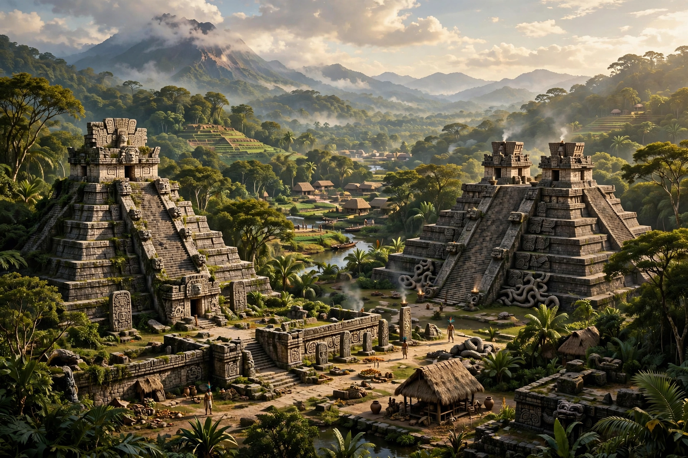

Mesoamerica is a historical region and cultural area in North America, extending from roughly central Mexico through Belize, Guatemala, El Salvador, Honduras, Nicaragua, and northern Costa Rica. It was home to a succession of pre-Columbian civilizations — among them the Olmec, Maya, Zapotec, Teotihuacan, Toltec, and Aztec (Mexica) — that shared cultural traits including maize agriculture, the Mesoamerican ballgame, pyramid temples, the 260-day ritual calendar, and vigesimal (base-20) numeration.

The extent of Mesoamerica at the time of the Spanish conquest.
| Mesoamerica | |
| Region | Central Mexico to northern Costa Rica |
|---|---|
| Civilizations | Olmec, Maya, Teotihuacan, Zapotec, Aztec, Mixtec, Toltec |
| Shared traits | Ballgame, 260-day calendar, maize, stepped pyramids, codices |
| Period | c. 1500 BC – AD 1521 (and continuing cultures) |
Anthropologist Paul Kirchhoff coined the term "Mesoamerica" in 1943 to designate a culture area whose peoples, despite linguistic diversity, shared a complex of interlocking traits originating in a common agricultural tradition based on maize, beans, and squash. Mesoamerica is one of only a few world regions where writing, urbanism, and state societies developed independently.
The Formative (Preclassic) period saw the Olmec heartland on the Gulf Coast (La Venta, San Lorenzo) and early Maya centers. In the Classic period (c. AD 250–900), Teotihuacan dominated central Mexico while Maya city-states such as Tikal and Palenque flourished in the lowlands. The Postclassic (c. 900–1521) brought the Toltecs, the rise of Chichén Itzá, and finally the Aztec Empire, whose capital Tenochtitlan was among the world's largest cities when Hernán Cortés arrived in 1519.
Mesoamerican peoples developed true writing systems (most fully in Maya hieroglyphs), positional mathematics with the concept of zero, precise astronomical observations, and the Long Count calendar. Their legacy persists in the languages, foods (chocolate, tomatoes, chiltepin and other chiles, vanilla), and millions of Indigenous descendants of the region today.